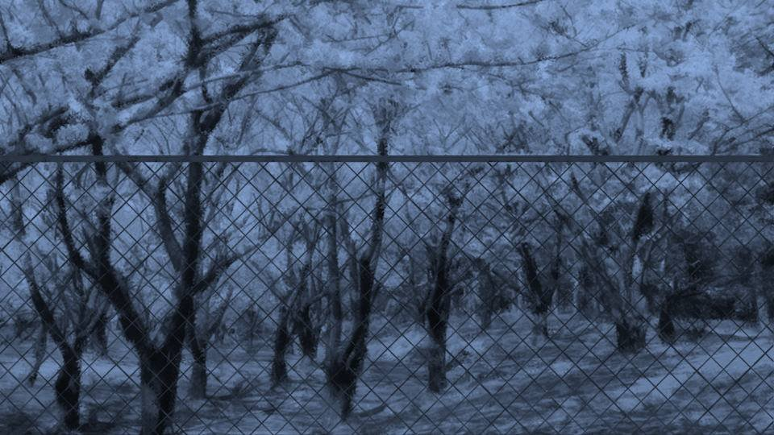
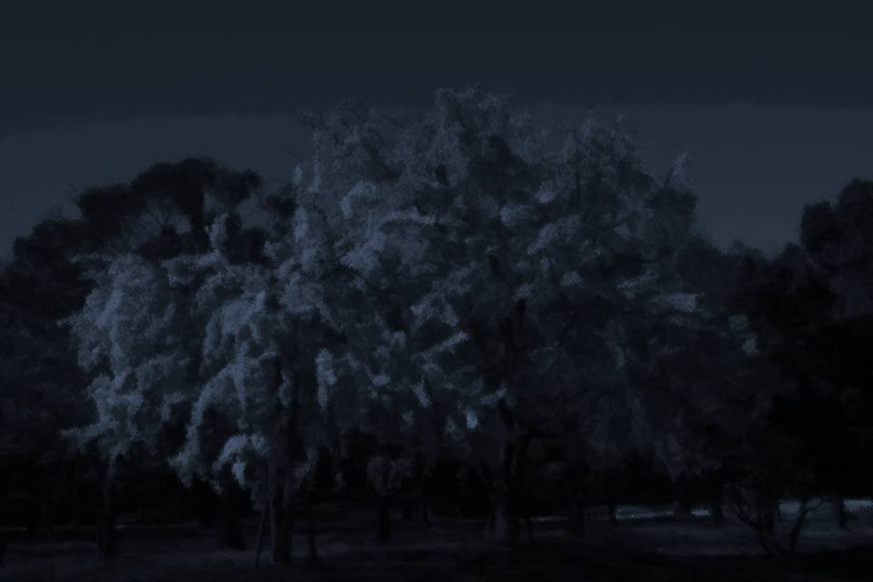
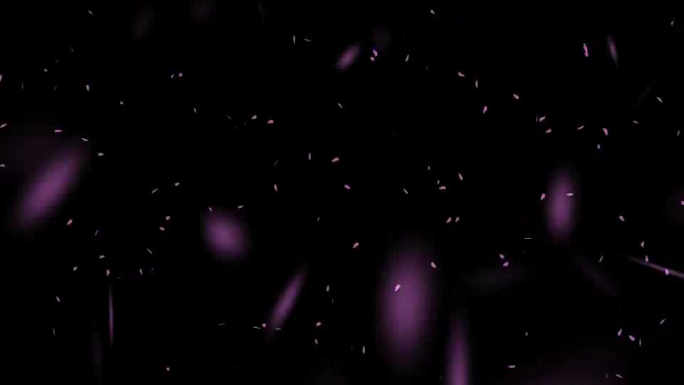
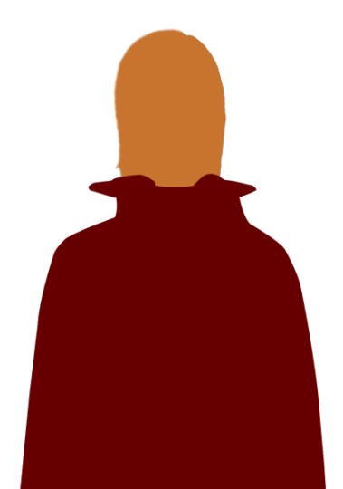
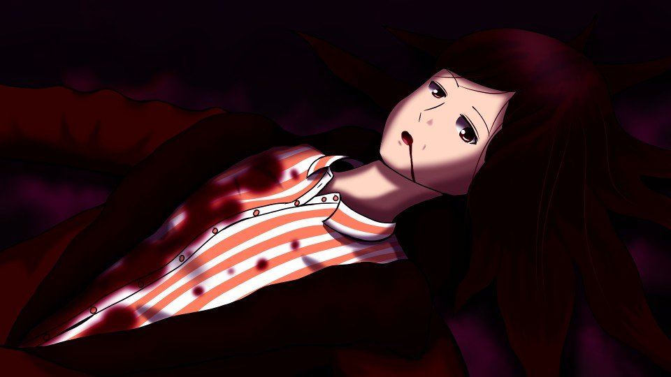
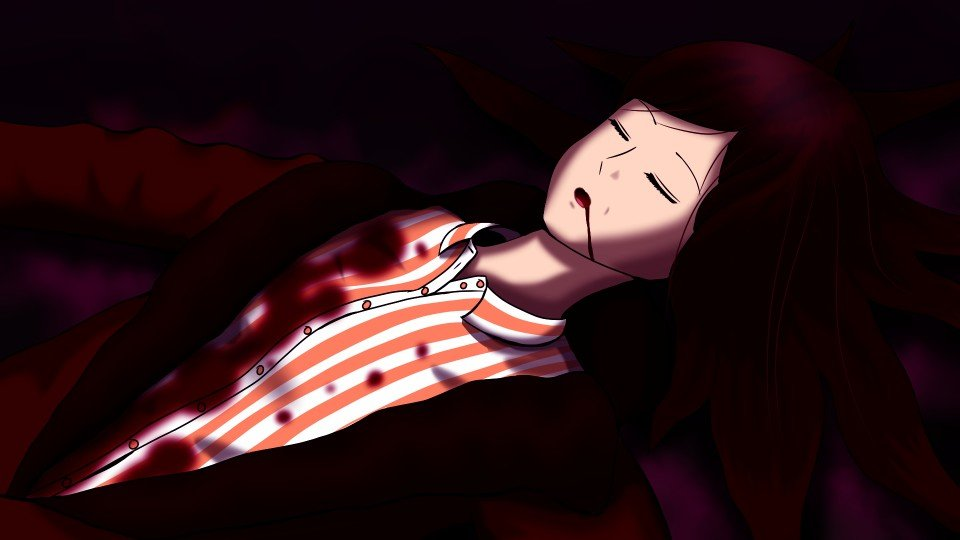
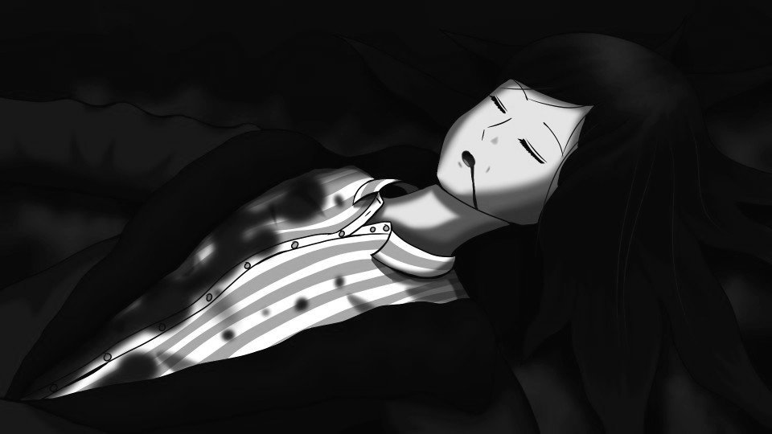

やっぱり、ごめんね。
ただ、声が聞こえる方へ。
私を呼ぶ声が聞こえる方へ。
痛みと戦い、強い向かい風に逆らい――。
ただひたすらに足を動かす。
私を助けてくれる人の元へ。
私を呼ぶ声が聞こえる方へ。
痛みと戦い、強い向かい風に逆らい――。
ただひたすらに足を動かす。
私を助けてくれる人の元へ。
危険を告げる声が聞こえる。
その危険から遠ざけてくれる――私を導く声が聞こえる。
その危険から遠ざけてくれる――私を導く声が聞こえる。
どうして私にはこのような声が聞こえるのだろう。
この声の主は誰なのだろうか。
この声の主は誰なのだろうか。
この直感が自分の能力なのか。
あるいは誰かが私にテレパシーのようなもので教え、それを感じ取る能力なのか。
どちらかと言えば、後者の方がピンとくる。
あるいは誰かが私にテレパシーのようなもので教え、それを感じ取る能力なのか。
どちらかと言えば、後者の方がピンとくる。
つまり、厳密には危険を察知できるわけではなく、危険を告げる声を聞くことができるのだ。
私に危険を伝えてくれる人って……。
そう言えば、今日、春花の家で見た夢って――。
私に危険を伝えてくれる人って……。
そう言えば、今日、春花の家で見た夢って――。

 video: 桜.wmv
video: 桜.wmvここは……中央公園？
この中に声の主がいる。
きっと助けてくれる。
この中に声の主がいる。
きっと助けてくれる。

 video: 桜.wmv
video: 桜.wmv桃色とも、青色ともつかぬ色で鈍く輝く御神木。
この色は月光を受けての色なのか、それとも、この危険を伝える声に関係しているのか。
この色は月光を受けての色なのか、それとも、この危険を伝える声に関係しているのか。

video: 桜吹雪風船なし.wmv立入禁止の中央公園に入ると、風は一層強くなり、桜吹雪に視界を奪われた。
自然と1本の桜の木――御神木へ足が向かう。
自然と1本の桜の木――御神木へ足が向かう。
video: 桜吹雪風船なし.wmv
「あれは……」
桜吹雪の向こうに、御神木の下に誰かが立っている。
見覚えがあるが、誰なのか分からない。
なぜなら、その人は真っ赤な姿をしていたからだ。
夢で見たあの人のように。
桜吹雪の向こうに、御神木の下に誰かが立っている。
見覚えがあるが、誰なのか分からない。
なぜなら、その人は真っ赤な姿をしていたからだ。
夢で見たあの人のように。
video: 桜吹雪風船なし.wmv「私を呼んだのは……あなた？」
赤い人は微動だにしない。
私は赤い人に近づいた。
赤い人は微動だにしない。
私は赤い人に近づいた。
video: 桜吹雪風船なし.wmvそしてその人の姿がはっきりするにつれて、その異様な風貌も明らかとなった。
その人には、皮がなく、全身の肉がむき出しになっていたのだ。
「な…… つ…… み……」
苦しそうだけど、聞き覚えのある、どこか安心できる声。
この声は、間違いない。
私のお父さんだ。
その人には、皮がなく、全身の肉がむき出しになっていたのだ。
「な…… つ…… み……」
苦しそうだけど、聞き覚えのある、どこか安心できる声。
この声は、間違いない。
私のお父さんだ。
video: 桜吹雪風船なし.wmv「お父さん……？ どうしてこんなところに……？
どうして、こんな姿に……？」
しかし、返事はない。
いや、何か言おうとしているが、声が出せないのだろう。
苦しそうに口を動かすだけで、ヒィ、ヒィ、と呼気が漏れる音。
しかし、返事はない。
いや、何か言おうとしているが、声が出せないのだろう。
苦しそうに口を動かすだけで、ヒィ、ヒィ、と呼気が漏れる音。
video: 桜吹雪風船なし.wmv「お父さん！ 私、なつみ！ どうしてこんなことに……」
するとお父さんは、痛々しい赤い手をゆっくり動かし、 私の左ひじにそっと当てる。
するとお父さんは、痛々しい赤い手をゆっくり動かし、 私の左ひじにそっと当てる。
video: 桜吹雪風船なし.wmvその手の感触は、まるで風に触れられているかのようにぼんやりとしている。
嫌悪感はない。
肉がむき出しになった手で触れられても、どこか温かさを感じるから――。
嫌悪感はない。
肉がむき出しになった手で触れられても、どこか温かさを感じるから――。
video: 桜吹雪風船なし.wmv「もう……大丈夫……」
これが気のせいなのは分かっている。
でも、その手を当てられ、その声を聞き――。
ひじからすっと痛みが引いていく。
と、今度はその手を私の頬に当てる。
これが気のせいなのは分かっている。
でも、その手を当てられ、その声を聞き――。
ひじからすっと痛みが引いていく。
と、今度はその手を私の頬に当てる。
video: 桜吹雪風船なし.wmv「なつみ……。
信じ……なさい……。
春花ちゃんを……」
呼気に混じり、はっきりとお父さんの声で、そのように聞こえた。
「春花を……信じる……？」
「みんなを…… みんなは……味方だよ」
「お父さん……！」
お父さんはむき出しの表情筋をたどたどしく動かす。
それはまるで、優しく笑いかけているようだった。
呼気に混じり、はっきりとお父さんの声で、そのように聞こえた。
「春花を……信じる……？」
「みんなを…… みんなは……味方だよ」
「お父さん……！」
お父さんはむき出しの表情筋をたどたどしく動かす。
それはまるで、優しく笑いかけているようだった。
video: 桜吹雪風船なし.wmv「お父さん……？」
私の頬に当てられていた手が、桜吹雪のようにはらはらと砕けていく。
花びらのように風に舞い、その姿が砕けていき――。
私の頬に当てられていた手が、桜吹雪のようにはらはらと砕けていく。
花びらのように風に舞い、その姿が砕けていき――。
video: 桜吹雪風船なし.wmvそしてお父さんは、桜に吸い込まれるように消えてしまった。
video: 桜吹雪風船なし.wmv「待って！ どうして！？ いったい何が……！」
再び濃い桜吹雪が、私の視界を奪う。
お父さんからは、何の返事もない。
ただ、春の風だけが吹き荒れていた。
再び濃い桜吹雪が、私の視界を奪う。
お父さんからは、何の返事もない。
ただ、春の風だけが吹き荒れていた。
video: 桜吹雪風船なし.wmv力が抜け、膝が桜の積もった地面に着く。
そうだったんだ……。
今朝の事件で私に関係があるって、そういうことだったんだ……。
お父さん、春花の家で見た夢で、警告してくれていたんだね。
そうだったんだ……。
今朝の事件で私に関係があるって、そういうことだったんだ……。
お父さん、春花の家で見た夢で、警告してくれていたんだね。
video: 桜吹雪風船なし.wmv「お父さん……」
桜の木を見上げると、一層視界がぼやけていく。
桜吹雪と目にたまった涙が、私の視神経を鈍らせる。
血しぶきのように舞う花の色が涙でにじみ、赤黒い視界だけを知覚する。
まるで、血の涙を流しているかのような――。
桜の木を見上げると、一層視界がぼやけていく。
桜吹雪と目にたまった涙が、私の視神経を鈍らせる。
血しぶきのように舞う花の色が涙でにじみ、赤黒い視界だけを知覚する。
まるで、血の涙を流しているかのような――。
video: 桜吹雪風船なし.wmvお父さんは、もういない。
しかし最後に、私を助けるために伝えてくれた。
春花を信じなさいと。
お父さんは……あのような姿で――皮を剥がされて死んだ。
それでも苦痛に耐え、私の前に現れ、助けようとしてくれた。
しかし最後に、私を助けるために伝えてくれた。
春花を信じなさいと。
お父さんは……あのような姿で――皮を剥がされて死んだ。
それでも苦痛に耐え、私の前に現れ、助けようとしてくれた。
後ろから足音。
1度まばたきをすると、視界を奪っていた涙が一気に頬を伝う。
同時に風が弱り、景色がはっきりする。
1度まばたきをすると、視界を奪っていた涙が一気に頬を伝う。
同時に風が弱り、景色がはっきりする。
「うぐ……！」
ひじの痛みがよみがえる。
今の出来事が夢であったかのように、景色も痛みも、私を現実に引き戻す。
ひじの痛みがよみがえる。
今の出来事が夢であったかのように、景色も痛みも、私を現実に引き戻す。

死神は、ひじを押さえたまま座り込む私に、能面越しの視線を向ける。
私にはもう逃げる力がないと分かっているのか、私にただじっと視線を送る。
私はその視線に応えるかのように、能面で見えないはずのその目を、強く睨み返す。
私にはもう逃げる力がないと分かっているのか、私にただじっと視線を送る。
私はその視線に応えるかのように、能面で見えないはずのその目を、強く睨み返す。
「あなたがお父さんを殺したのね……」
「…………」
返事はなく、私を襲うそぶりも、これ以上近づくそぶりもない。
ならばと、私はさらに言葉を続ける。
「…………」
返事はなく、私を襲うそぶりも、これ以上近づくそぶりもない。
ならばと、私はさらに言葉を続ける。
「春花が呪ったように見せかけて、それで私を殺そうとしてるんでしょ？
どうして……。あなた、誰なの……？」
と、こちらにもう1人駆け寄ってくるのが見えた。
と、こちらにもう1人駆け寄ってくるのが見えた。

「そこまでだ！ 公園は完全に包囲した！ 逃げ場はない！」
伊勢さんの大声。
気がつくと、大勢の部隊が公園を取り囲んでいた。
それでも死神は微動だにせず、私から視線をそらさない。
伊勢さんの大声。
気がつくと、大勢の部隊が公園を取り囲んでいた。
それでも死神は微動だにせず、私から視線をそらさない。
「さっき弾が数発当たったはず。お前は防弾チョッキを着ているな？
いったいどうやってそんなものを……。
それに、お前はあらゆる殺人術を知っている。
誰なんだ？ お前の協力者は……」
伊勢さんの問いかけにも、死神は無反応だ。
伊勢さんの問いかけにも、死神は無反応だ。
「新村春花さんを騙して過去に6人を殺し、古郡良治さん殺害、そして古郡なつみさん殺人未遂。
殺人罪および殺人未遂の容疑で逮捕する！
死神……。
いや……
新村美冬！」
すると死神はフードと能面に手をかけた。
その下からは――。
すると死神はフードと能面に手をかけた。
その下からは――。
video: 桜.wmv
「おかあ……さん……？
嘘でしょ……？」
「バ、バカな！ 古郡良治さんを殺害したのは、間違いなく新村美冬のはずだ！」
「お母さんが……お父さんを……？」
「バ、バカな！ 古郡良治さんを殺害したのは、間違いなく新村美冬のはずだ！」
「お母さんが……お父さんを……？」
video: 桜.wmv「なつみ……。
良治君は……
お父さんはね……
最後の最後まで、私たちを守ろうとしたの。
せめて、あなたた――
うぐ！」
お母さんはそう言うと、すべての力を出し切ったかのよう倒れてしまった。
「お、おい古郡さん！ どうしたんだ！」
お母さんはそう言うと、すべての力を出し切ったかのよう倒れてしまった。
「お、おい古郡さん！ どうしたんだ！」
video: 桜.wmv伊勢さんはお母さんが着ていた赤装束に手をかけた。

video: 桜.wmv「バカな……！ 防弾チョッキどころか、ただの服じゃないか！
おい！ 救急車はまだ準備できてないのか！？」
「お母さん！ いやだ！ お母さんまで……！」
「なつみ……早く、この町から逃げなさい……。 春花ちゃんと……一緒に……」
「お母さん！ いやだ！ お母さんまで……！」
「なつみ……早く、この町から逃げなさい……。 春花ちゃんと……一緒に……」
video: 桜.wmv「おいしっかりしろ！
新村美冬は……あいつはどうなったんだ！？」
video: 桜.wmv「美冬は……あの子は……
なつみを殺そうとして……
うぐっ……！」
「お母さん！ 死んじゃやだよ！ 私を1人にしないで！」
「大丈夫よ……。なつみには、春花ちゃんがいるじゃない……」
「お母さんが死ぬなんていやだ！ 私、家族がいなくなっちゃう！」
「お母さん！ 死んじゃやだよ！ 私を1人にしないで！」
「大丈夫よ……。なつみには、春花ちゃんがいるじゃない……」
「お母さんが死ぬなんていやだ！ 私、家族がいなくなっちゃう！」
video: 桜.wmv「それは……
ぐっ……！」
「古郡さん、もうしゃべるな！」
「い……伊勢さん……。 私はもう……ダメだから……。 せめて、この子たちが、元木町から……」
「お母さん！ ダメ！ 話しちゃダメ！」
「いい？ なつみ……。 私も……良治君も…… なつみたちには、ずっと幸せに……」
「お母さん……！」
「古郡さん、もうしゃべるな！」
「い……伊勢さん……。 私はもう……ダメだから……。 せめて、この子たちが、元木町から……」
「お母さん！ ダメ！ 話しちゃダメ！」
「いい？ なつみ……。 私も……良治君も…… なつみたちには、ずっと幸せに……」
「お母さん……！」

video: 桜.wmvお母さんの手を握ると、ぬめりとした感触。
大量の血が手に付着していた。
お母さんの身体にまとわりつく血に桜が張りつき、桜色の血を流したかのようにお母さんの身体を彩っていく。
その桜は救急車のランプを反射し、より一層私たちを鮮やかに映し出す。
まるで、お母さんに旅立ちの花束を手向けるかのように――。
大量の血が手に付着していた。
お母さんの身体にまとわりつく血に桜が張りつき、桜色の血を流したかのようにお母さんの身体を彩っていく。
その桜は救急車のランプを反射し、より一層私たちを鮮やかに映し出す。
まるで、お母さんに旅立ちの花束を手向けるかのように――。

video: 桜.wmvお母さんはすぐに病院に運ばれたが、到着前に救急車で息絶えてしまった。
私はそれでも、桜がこびりついたお母さんの手を離さなかった。
お母さんはどんな思いで、この手に武器を握ったのだろうか。
私はそれでも、桜がこびりついたお母さんの手を離さなかった。
お母さんはどんな思いで、この手に武器を握ったのだろうか。
video: 桜.wmv不思議に思うことはあれど、今はお父さんとお母さんを同時に失った悲しみが打ち勝ってしまう。
そして、2人の死を悲しんでいる自分自身を、どこか俯瞰的に見ていた。
お母さんの手を握る私の姿は―― 滑稽だった。
そして、2人の死を悲しんでいる自分自身を、どこか俯瞰的に見ていた。
お母さんの手を握る私の姿は―― 滑稽だった。
video: 桜.wmvどうして2人がこんな目に遭ったのか。
そんなことすら理解していない私が、ただ2人の死を悲しんでいることが滑稽だった。
何も知らない小娘が、悲しいからという理由で泣いている。
私のために両親は死んだはずなのに、何が私のためなのかすら分からない。
そんなことすら理解していない私が、ただ2人の死を悲しんでいることが滑稽だった。
何も知らない小娘が、悲しいからという理由で泣いている。
私のために両親は死んだはずなのに、何が私のためなのかすら分からない。
video: 桜.wmvすべての苦痛や苦心を親任せにして、私は何もせず安穏と生きてきた。
私にも、何かできたことがあったのではないだろうか。
そんな反省すらせず、泣いている姿がバカらしかった。
私にも、何かできたことがあったのではないだろうか。
そんな反省すらせず、泣いている姿がバカらしかった。
video: 桜.wmv病院で、ある知らせが入った。
古郡家と新村家は火事で焼けてしまったと。
古郡家と新村家は火事で焼けてしまったと。

おばさんは、どこへ行ったのかわからないそうだ。
お母さんの鉈や赤装束は、おばさんから奪ったものと推測されるらしい。
お母さんの鉈や赤装束は、おばさんから奪ったものと推測されるらしい。
少なくとも、おばさんがお父さんを殺した犯人であることは間違いない、と伊勢さんは言う。
――後日、春花のお父さんが亡くなった原因を聞いた。
きっと、おばさんは私を恨んで殺そうとしたのだろう。
それに気づいたお父さんが止めようとして殺害された。
そしてお母さんはやむを得ず親友であった春花のお母さんを……。
警察はそのように推測したのだが……。
きっと、おばさんは私を恨んで殺そうとしたのだろう。
それに気づいたお父さんが止めようとして殺害された。
そしてお母さんはやむを得ず親友であった春花のお母さんを……。
警察はそのように推測したのだが……。
それでもたくさんの謎は残ったまま。
容疑者からも被害者からも話を聞くことができず、この事件も女ケ沢市事件同様、真相は闇の中。
それを解明する手立ては、もうないのだ。
容疑者からも被害者からも話を聞くことができず、この事件も女ケ沢市事件同様、真相は闇の中。
それを解明する手立ては、もうないのだ。
Read ✓ Next in this arc →